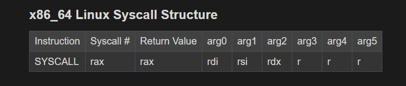
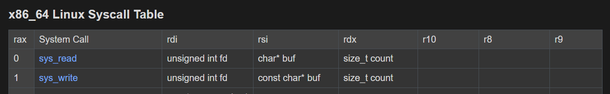
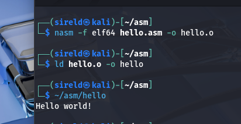
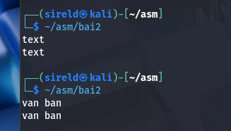
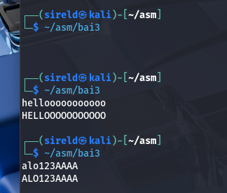
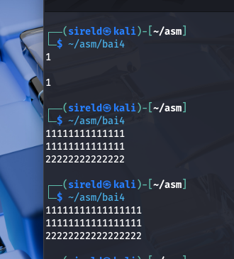

Assembly tutorial
Cấu trúc của system call trong Linux
Trước tiên, chúng ta cần hiểu cách gọi system call trong Linux x86-64. Cấu trúc các thanh ghi được dùng khi gọi system call như hình dưới đây:

Trong đó:
rax: chứa mã system call.rdi,rsi,rdx, ...: chứa các tham số được truyền vào system call.
Ví dụ, system call write dùng để ghi dữ liệu ra một file descriptor. Cấu trúc tham số của write được minh họa bên dưới:

unsigned int fd: file descriptor, một số nguyên không âm đại diện cho đầu vào/đầu ra hoặc một tệp.0:stdin(đầu vào chuẩn).1:stdout(đầu ra chuẩn).2:stderr(đầu ra lỗi chuẩn).buffer: vùng nhớ chứa dữ liệu cần đọc hoặc ghi.size_t count: số byte cần đọc hoặc ghi.
ASM #1 - Hello World - 100 điểm
Đề bài: Viết chương trình in ra màn hình dòng chữ Hello, World!.
Yêu cầu:
- Hệ điều hành: Windows và Linux.
- Hiểu các thành phần của một chương trình Assembly và giải thích từng dòng code.
; Khởi tạo dữ liệu
section .data
msg db "Hello, World!", 0
section .text
global _start
_start:
; In ra "Hello, World!"
mov rax, 1
mov rdi, 1 ; fd stdout = 1
mov rsi, msg ; rsi trỏ tới msg
mov rdx, 13
syscall
; Kết thúc chương trình
mov rax, 60
mov rdi, 0
syscallKết quả chạy chương trình:

ASM #2 - Echo - 100 điểm
Đề bài: Nhập vào một đoạn văn bản và in lại đoạn văn bản vừa nhập.
Yêu cầu:
- Hệ điều hành: Windows và Linux.
- Độ dài đoạn văn bản: 32 ký tự.
section .bss
buffer resb 32
section .text
global _start
_start:
; Đọc văn bản nhập vào
mov rax, 0
mov rdi, 0 ; fd stdin = 0
mov rsi, buffer ; rsi trỏ tới buffer
mov rdx, 32
syscall
; In ra văn bản vừa nhập
mov rax, 1
mov rdi, 1 ; fd stdout = 1
mov rsi, buffer ; rsi trỏ tới buffer
mov rdx, 32
syscall
mov rax, 60
mov rdi, 0
syscallKết quả:

ASM #3 - Uppercase - 100 điểm
Đề bài: Nhập vào một chuỗi văn bản và in ra chuỗi văn bản đã được chuyển thành chữ in hoa.
Yêu cầu:
- Hệ điều hành: Windows và Linux.
- Độ dài đoạn văn bản: 32 ký tự.
Với các chữ cái tiếng Anh thường từ a đến z, có thể chuyển thành chữ hoa bằng cách trừ mã ASCII đi 32. Chương trình duyệt qua từng byte, kiểm tra byte đó có nằm trong khoảng chữ thường hay không rồi mới chuyển đổi.
section .bss
buffer resb 32
section .text
global _start
_start:
; Đọc văn bản nhập vào
mov rax, 0
mov rdi, 0
mov rsi, buffer
mov rdx, 32
syscall
mov r8, rax ; Lưu số byte vừa đọc
mov rsi, buffer ; Con trỏ tới buffer
mov rcx, r8
cmp rcx, 0 ; Không có dữ liệu thì kết thúc
je end
convert_loop:
mov al, [rsi] ; Lấy byte tại vị trí rsi
cmp al, 'a'
jb next_char ; Nếu nhỏ hơn 'a' thì bỏ qua
cmp al, 'z'
ja next_char ; Nếu lớn hơn 'z' thì bỏ qua
sub al, 32 ; Chuyển chữ thường thành chữ hoa
mov [rsi], al
next_char:
inc rsi ; Sang ký tự tiếp theo
loop convert_loop
end:
; In ra kết quả
mov rax, 1
mov rdi, 1
mov rsi, buffer
mov rdx, r8 ; Số byte cần in
syscall
mov rax, 60
xor rdi, rdi
syscallKết quả:

ASM #4 - Simple Addition - 100 điểm
Đề bài: Viết chương trình tính tổng hai số nguyên dương nhập vào từ bàn phím.
Yêu cầu:
- Hệ điều hành: Windows và Linux.
- Độ lớn tối đa của mỗi số nhập vào: 31-bit (
2^31 - 1).
Khi nhập dữ liệu từ bàn phím, máy tính nhận được các byte biểu diễn ký tự ASCII. Vì vậy, cần chuyển chuỗi ký tự thành số nguyên trước khi tính toán, sau đó chuyển kết quả từ số nguyên thành chuỗi để in ra.
Trong chương trình này, atoi chuyển chuỗi số ASCII thành số nguyên và trả kết quả trong rax. Hàm itoa chuyển số nguyên thành chuỗi ASCII; con trỏ và độ dài chuỗi được trả về qua rsi và rdx.
section .bss
input resb 32
a resb 32
b resb 32
sum resb 32
section .text
global _start
_start:
; nhập giá trị cho a
mov rax, 0
mov rdi, 0
mov rsi, input
mov rdx, 32
syscall
call atoi ; chuyển chuỗi -> số, kết quả lưu tại rax
mov [a], rax ; ghi giá trị vào a
; nhập giá trị cho b
mov rax, 0
mov rdi, 0
mov rsi, input
mov rdx, 32
syscall
call atoi ; chuyển chuỗi -> số, kết quả lưu tại rax
mov [b], rax ; ghi giá trị vào b
; cộng a và b rồi ghi vào sum
mov rax, [a]
add rax, [b]
mov [sum], rax
mov rdi, [sum] ; ghi giá trị sum vào rdi
call itoa ; gọi hàm để chuyển số thành chuỗi và in kết quả
; in ra kết quả
mov rax, 1
mov rdi, 1
syscall
; kết thúc chương trình
mov rax, 60
xor rdi, rdi
syscall
; chuyển từ chuỗi thành số
atoi:
xor rax, rax ; rax = 0
mov rcx, input
atoi_loop:
movzx rdx, byte [rcx]
cmp rdx, 0x0A ; so sánh với \n
je done ; nếu là \n thì kết thúc
cmp rdx, '0' ; so sánh với 'o'
jb done ; nếu < '0' thì kết thúc
cmp rdx, '9' ; so sánh với '9'
ja done ; nếu > '9' thì kết thúc
sub rdx, '0' ; chuyển ký tự về số bằng việc trừ đi cho '0', ví dụ: 1 = '1' - '0' = 0x31 - 0x30
imul rax, 10 ; nhân giá trị rax hiện tại cho 10, sau đó cộng vào kết quả
add rax, rdx
inc rcx ; tăng con trỏ lên 1 đơn vị
jmp atoi_loop ; quay lại vòng lặp
done:
ret
; chuyển từ số thành chuỗi
itoa:
mov rsi, input + 32
mov byte [rsi], 0x0A ; trỏ đến cuối của input và thêm vào \n
mov rax, rdi ; lấy giá trị của rdi, sum hiện tại
mov rbx, 10 ; rbx = 10
mov rcx, 1 ; rcx = 1
itoa_loop:
xor rdx, rdx ; rdx = 0
div rbx ; rax = rax/rbx; rdx = rax%rbx = rax%10
add dl, '0' ; chuyển phần dư thành mã ascii với việc cộng thêm '0'
dec rsi ; lùi con trỏ lại 1 ô
mov [rsi], dl ; lưu lại giá trị vào [rsi]
inc rcx ; tăng rcx để đếm số byte cần đọc
test rax, rax ; kiểm tra nếu rax = 0 thì kết thúc
jnz itoa_loop
mov rdx, rcx ; rdx trả về số byte cần đọc
retKết quả:
